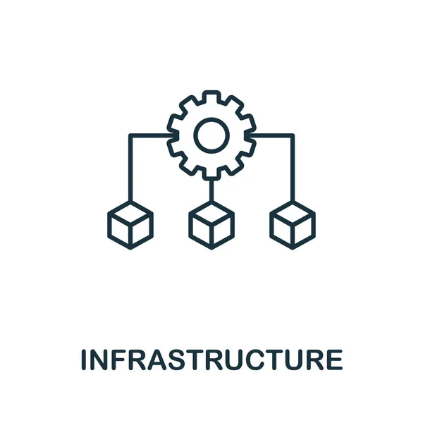

E-commerce (electronic commerce) is the buying and selling of goods and services, or the transmitting of funds or data, over an electronic network, primarily the internet. These business transactions occur either as business-to-business (B2B), business-to-consumer (B2C), consumer-to-consumer or consumer-to-business.

Infrastructure
Economic infrastructure refers to the facilities, activities and services which support operation and development of other sectors of the economy. These facilities, activities and services help in increasing the overall productivity of the economy. Technologies that enable infrastructure are cloud platforms, IoT technologies and data centres.
E-business
E-Business (electronic business) is any process that a business organization conducts over a computer-mediated network. Business organizations include any for-profit, governmental, or nonprofit entity. Their processes include production-, customer-, and internal- or management-focused business processes.